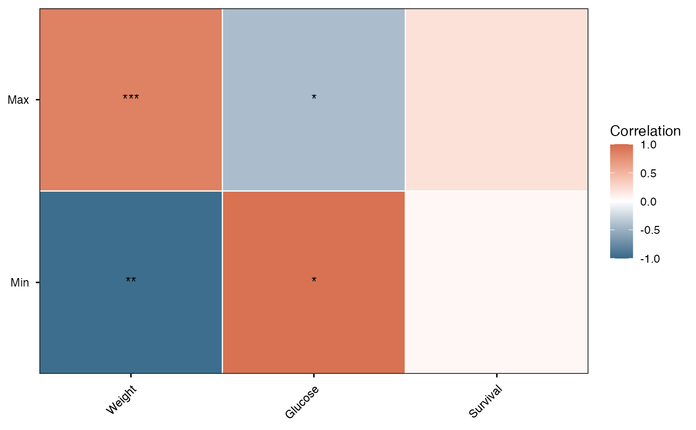

Generates a publication-ready correlation heatmap from the results of thermal and external trait correlation analysis. The plot features customizable color gradients, adjustable significance labels, and a clean, fixed-aspect-ratio layout suitable for academic reporting.
Usage
viz_cor_heatmap(
cor_result,
use_adjusted = TRUE,
show_significance = TRUE,
sig_levels = c(0.05, 0.01, 0.001),
sig_ns_label = "",
low = "#346888",
mid = "#FFFFFF",
high = "#D56B4A",
midpoint = 0,
limits = c(-1, 1),
tile_color = "white",
tile_size = 0.4,
rotate_x = 45,
text_size = 4,
na_fill = "grey95"
)Arguments
- cor_result
A `thermal_correlation_result` object or a `data.frame` containing the correlation results. Must contain at least `thermal_var`, `external_var`, and `cor` columns.
- use_adjusted
A logical value indicating whether to use adjusted p-values (`p_adj`) for generating significance labels. Defaults to `TRUE`.
- show_significance
A logical value indicating whether to overlay significance stars (*, **, ***) on the heatmap tiles. Defaults to `TRUE`.
- sig_levels
A numeric vector of length 3 defining the p-value thresholds for *, **, and *** significance labels, respectively. Defaults to `c(0.05, 0.01, 0.001)`.
- sig_ns_label
A character string to display when the correlation is not statistically significant. Defaults to `""` (empty string).
- low
A character string specifying the color for strong negative correlations. Defaults to `"#346888"` (dark blue).
- mid
A character string specifying the color for zero correlation. Defaults to `"#FFFFFF"` (white).
- high
A character string specifying the color for strong positive correlations. Defaults to `"#D56B4A"` (dark orange).
- midpoint
A numeric value specifying the midpoint for the color gradient. Defaults to 0.
- limits
A numeric vector of length 2 defining the scale limits of the correlation coefficient. Defaults to `c(-1, 1)`.
- tile_color
A character string specifying the border color of the individual tiles. Defaults to `"white"`.
- tile_size
A numeric value defining the border thickness of the tiles. Defaults to 0.4.
- rotate_x
A numeric value indicating the rotation angle for the x-axis text labels. Defaults to 45.
- text_size
A numeric value specifying the font size of the significance text labels. Defaults to 4.
- na_fill
A character string specifying the fill color for missing (NA) correlation values. Defaults to `"grey95"`.
Examples
# Generate a dummy dataset representing correlation results
df_res <- data.frame(
thermal_var = rep(c("Max", "Min"), each = 3),
external_var = rep(c("Weight", "Glucose", "Survival"), times = 2),
cor = c(0.85, -0.42, 0.2, -0.96, 0.95, 0.05),
p_adj = c(0.0005, 0.02, 0.5, 0.008, 0.04, 0.8)
)
# Render the heatmap
viz_cor_heatmap(
cor_result = df_res,
use_adjusted = TRUE,
show_significance = TRUE,
rotate_x = 45
)
